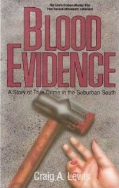

Blood Evidence: A Story of True Crime in the Suburban South
A Nonfiction, Crime, True Crime book. Very interesting account of a murder in my hometown of Shreveport in the early 80's. Left me with more...
Download or read Blood Evidence: A Story of True Crime in the Suburban South in PDF formats. You may also find other subjects related with Blood Evidence: A Story of True Crime in the Suburban South.
- Filetype: PDF
- Pages: 271 pages
- ISBN: 9780874831160 / 874831164
H1tZkpxRod-.pdf
More About Blood Evidence: A Story of True Crime in the Suburban South
Very interesting account of a murder in my hometown of Shreveport in the early 80's. Left me with more questions and I'm still not convinced Dr. Graham murdered his wife.